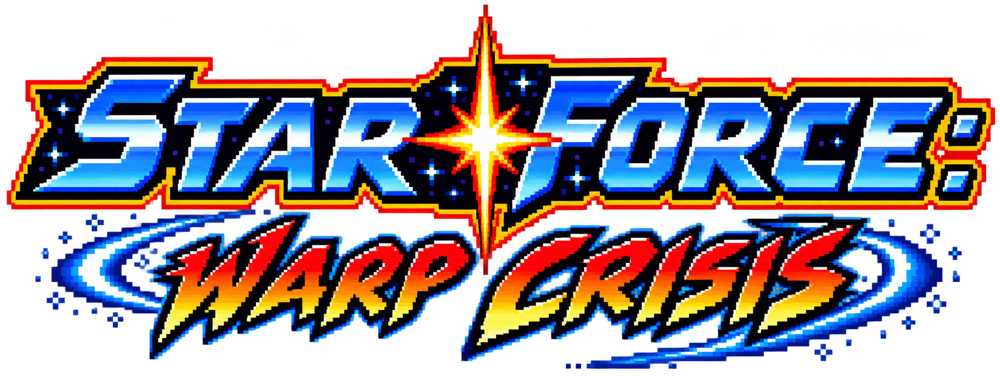
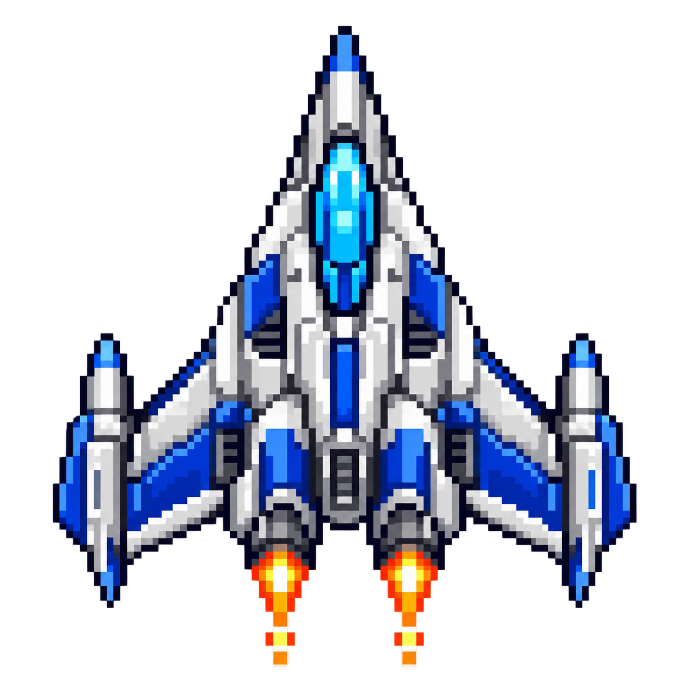
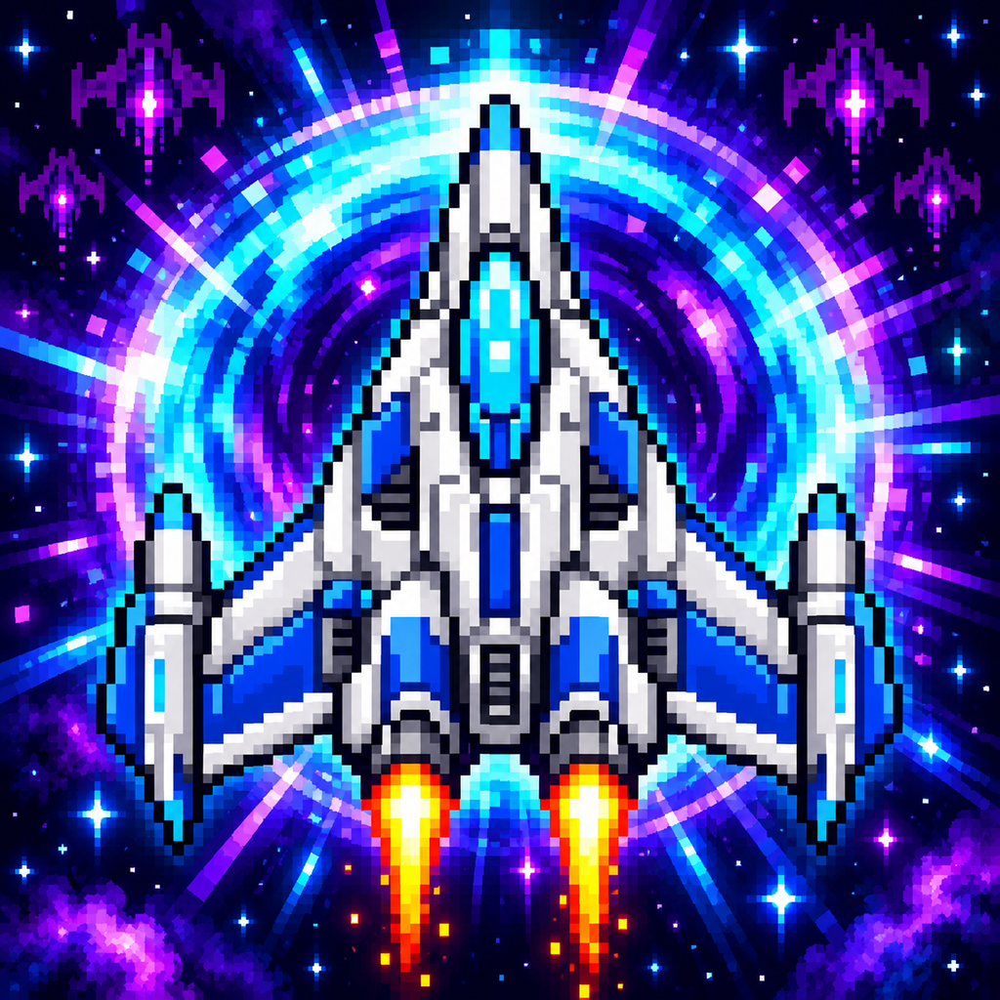

Carriers bring company.
Watch launch bays come alive as fighters rise from the deck—or blinking mines spread into your path.

GET THE GAME ↗STAR FORCE CORPS / MOBILE ARCADE
A universe that refuses to sit still.
Pilot your fighter through alien worlds, colossal machines, and the chaos between.

SF–01 / CLASSICFLIGHT SYSTEMS ONLINE WARP CRISIS // MOBILE ARCADE01 / IN-GAME FOOTAGE
Jungle rivers. Ocean battle fleets. Storm carriers. A furnace-powered robot dragon. See the current game in motion.
Drag to move. Keep firing. Collect supplies. Slip through a warp gate and discover what’s waiting on the other side.
One galaxy.
Twelve ways
to survive.
02 / BEYOND THE GATE
Random warp destinations keep each run moving. Every sector has its own atmosphere, threats, and guardian.
Earth 2184 · Lab-X9 · Xylos · Metropolis Prime · Kepler · Ossuary Robot Graveyard
03 / STAR FORCE CORPS
Four fighters. Four different approaches. Switch your style before you deploy.
BALANCED FIGHTER
Dependable handling with room for power-ups. The versatile fighter for your first deployment and everything beyond.
04 / STAY SHARP
Watch launch bays come alive as fighters rise from the deck—or blinking mines spread into your path.
Damage an emitter and its red laser starts glitching. Hit it again to destroy the endpoint and break the link.
Portals can take you somewhere new. Leaving a guarded sector means finishing the fight first.

YOUR NEXT DEPLOYMENT
Star Force: Warp Crisis for iOS and Android.
Store links will be added here when they’re ready.
FOLLOW THE WARP. YOUR MISSION STARTS HERE.